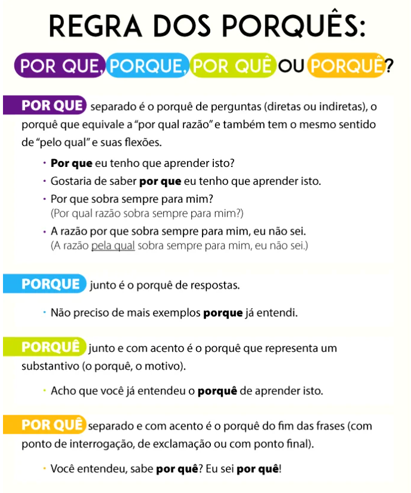

Uso dos Porquês
Quando usar por que: para perguntas
- "Por que" separado e sem acento é usado no início das frases interrogativas diretas ou no meio, no caso de frases interrogativas indiretas.
- Assim, utilizamos o "por que" em perguntas ou como pronome relativo, com o sentido de "por qual e "pelo qual".
- Quando usado no meio das frases, "por que" tem a função de pronome relativo. Pode ser substituído por "por qual e "pelo qual".
Quando usar porque: para respostas
- "Porque", escrito junto e sem acento, é utilizado em respostas. Ele exerce a função de uma conjunção subordinativa causal ou coordenativa explicativa.
- Assim, utilizamos o "por que" em perguntas ou como pronome relativo, com o sentido de "por qual e "pelo qual".
Quando usar por quê: no fim das frases
- "Por quê", escrito separado e com acento circunflexo, é usado no fim das frases(com ponto de interrogação, de exclamação ou com ponto final).
Quando usar porquê: com valor de substantivo
- "Porquê", escrito junto e com acento circunflexo, possui o valor de substantivo na frase e significa “motivo” ou “razão”.
- Ele aparece nas sentenças precedido de artigo, pronome, adjetivo ou numeral com objetivo de explicar o motivo dentro da frase.

Site oficial : EEEP DEPUTADO ROBERTO MESQUITA